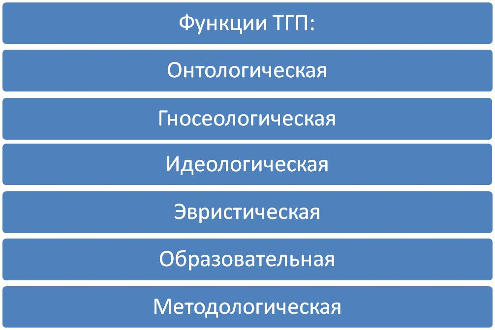
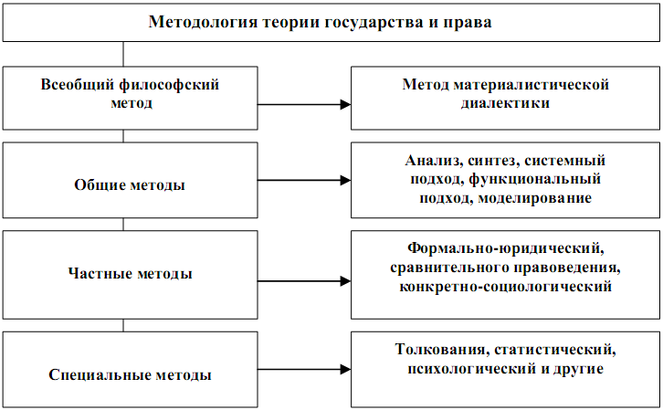

Теория государства и права – это гуманитарная наука о закономерностях возникновении, развитии и функционировании государства и права, а также это наука, которая вырабатывает систему основных понятий, которыми пользуются все юридические науки.
Предмет теории государства и права (сторона объективной действительности, которая изучается ТГП):
Наиболее общие закономерности возникновения, развития и функционирования государства и права (возникновение государства и права, смена их исторических типов, эволюция форм государства и права, построение органов государства и права, осуществление функций государства и права, пределы регулирующего воздействия государства и права на общественные отношения, расширение и обогащение прав личности и условия их защиты, укрепление принципов демократии, законности и правопорядка, соблюдение, исполнение, использование и применение норм права, развитие юридической науки);
Функции теории государства и права представляют собой основные направления действия данной науки, необходимые для решения стоящих перед ней целей и задач. Функции характеризуют ее теоретическое и практическое значение для прогрессивного преобразования общественной жизни.

Онтологической функции (онтология - учение о бытии) теория государства и права познает суть государственно-правовых явлений, отвечает на вопросы, что есть государство и право, как и почему они возникают и действуют и т.п.Гносеологическая функция(гносеология - теория познания) теории государства и права состоит в выработке научных концепций, доктрин, правовых понятий, категорий, а также приемов и способов, помогающих научному познанию государства и права.
c помощью эвристической функции (эвристика - искусство нахождения истины) теория государства и права открывает новые закономерности в развитии государственно-правовых институтов, в частности в условиях современных рыночных реформ.
Прогностическая функция теории государства и права проявляется в предвидении тех или иных изменений в государственно-правовой действительности, в определении тенденций развития государственно-правовой жизни, в выдвижении гипотез об их будущем.
Будучи фундаментальной наукой, теория государства и права выполняет и методологическую функцию, т.е. создает систему понятий и категорий, применяющуюся во всех иных юридических науках, имеющую существенное, основополагающее значение для юриспруденции в целом.
Осуществляя идеологическую функцию, теория государства и права приводит в систему идеи и взгляды о государстве и праве, воздействует непосредственно на сознание субъектов и социальную жизнь как важнейший идеологический фактор.
Организационно-прикладная функция теории государства и права проявляется в преобразовании, реформировании государственно-правовой жизни, в разработке рекомендаций и предложений по решению актуальных проблем государственно-правового строительства, в обеспечении научности государственного управления и правового регулирования.
Метод ТГП – это совокупность приемов, средств и правил, с помощью которых постигается предмет ТГП, получаются новые знания.

ТГП является одновременно гуманитарной наукой, предмет которой составляют такие общественные явления как государство и право, чем обусловлено ее отличие от технических и естественных науки сходство с гуманитарными, и, политико-юридической, изучая непосредственно отнесенные к государству и праву социальные институты, чем обусловлено ее отличие от иных гуманитарных наук.
ТГП находясь в системе гуманитарных наук, тесно взаимодействует с философией, политологией, экономической теорий, социологией, психологией, этикой, историей, педагогикой и т.д.
С помощью философии ТГП вырабатывает мировоззренческие позиции, приобретая методологию познания государственных и правовых явлений, использует философские положения об общих законах развития природы, общества и мышления. Философия использует материал о государстве и праве, разработанный ТГП, для философских обобщений.
ТГП также имеет тесную связь с экономической теорий, социологией, психологией, этикой, историей, педагогикой и иными гуманитарными науками, поскольку они применяют общие (междисциплинарные) понятия (например, общество, благо, интерес, собственность), и сугубо специальные (например, гражданское общество, право собственности, правомерное поведение).
ТГП является теоретической наукой, изучает наиболее общие закономерности государства и права, чем обусловлено ее отличие от иных юридических наук (историко-политических, отраслевых и прикладных наук).
ТГП и историко-политические науки рассматривают государственные и правовые явления в целом, не выделяя границ во времени в познавательной деятельности, однако историко-политические науки рассматривают государственные и правовые явления в хронологическом порядке, применяя преимущественно исторический метод, а ТГП исследует сущность государство и право, применяя преимущественно логический метод.
ТГП является обобщающей наукой для отраслевых юридических наук и исходит из фактического материала, содержащихся в них.
С прикладными науками ТГП связана опосредованно через отраслевые юридические науки.
Теория государства и права как учебная дисциплина - ; юридическая дисциплина, изучаемая на 1 курсах высших учебных заведениях обобщающая достижения науки теории государства и права и излагающая эти достижения в установленных формах.
Функции теории государства и права как учебной дисциплины:
- Познавательная
- Идеологическая
- Воспитательная
- Вводная
- Обобщающая